Last updated: 2015-09-28
Code version: 3f442a23f405d3564d9ab3197ec337df22fe9383
Carry out cell cycle analysis of single cell iPSCs using the method by Macosko2015
Gene sets reflecting five phases of the HeLa cell cycle (G1/S, S, G2/M, M and M/G1) were taken from Whitfield et al. (Whitfield et al., 2002) (Table S2), and refined by examining the correlation between the expression pattern of each gene and the average expression pattern of all genes in the respective gene-set, and excluding genes with a low correlation (R<0.3). This step removed genes that were identified as phase-specific in HeLa cells but did not correlate with that phase in our single-cell data. The remaining genes in each refined gene-set were highly correlated (not shown). We then averaged the normalized expression levels (log2(TPM+1)) of the genes in each gene-set to define the phase-specific scores of each cell. These scores were then subjected to two normalization steps. First, for each phase, the scores were centered and divided by their standard deviation. Second, the normalized scores of each cell were centered and normalized.
library("dplyr")
library("ggplot2")
theme_set(theme_bw(base_size = 16))
library("edgeR")
library("gplots")Input annotation.
anno <- read.table("../data/annotation.txt", header = TRUE,
stringsAsFactors = FALSE)
head(anno) individual batch well sample_id
1 19098 1 A01 NA19098.1.A01
2 19098 1 A02 NA19098.1.A02
3 19098 1 A03 NA19098.1.A03
4 19098 1 A04 NA19098.1.A04
5 19098 1 A05 NA19098.1.A05
6 19098 1 A06 NA19098.1.A06Summary counts from featureCounts. Created with gather-summary-counts.py. These data were collected from the summary files of the full combined samples.
summary_counts <- read.table("../data/summary-counts.txt", header = TRUE,
stringsAsFactors = FALSE)Currently this file only contains data from sickle-trimmed reads, so the code below simply ensures this and then removes the column.
summary_per_sample <- summary_counts %>%
filter(sickle == "quality-trimmed") %>%
select(-sickle) %>%
arrange(individual, batch, well, rmdup) %>%
as.data.frame
summary_per_sample_reads <- summary_per_sample %>% filter(rmdup == "reads")
summary_per_sample_reads$sample_id <- anno$sample_idInput read counts.
reads <- read.table("../data/reads.txt", header = TRUE,
stringsAsFactors = FALSE)Input molecule counts.
molecules <- read.table("../data/molecules.txt", header = TRUE,
stringsAsFactors = FALSE)Input list of quality single cells.
quality_single_cells <- scan("../data/quality-single-cells.txt",
what = "character")Keep only the single cells that passed the QC filters and the bulk samples.
molecules <- molecules[, grepl("bulk", colnames(molecules)) |
colnames(molecules) %in% quality_single_cells]
anno <- anno[anno$well == "bulk" | anno$sample_id %in% quality_single_cells, ]
stopifnot(ncol(molecules) == nrow(anno),
colnames(molecules) == anno$sample_id)
reads <- reads[, grepl("bulk", colnames(reads)) |
colnames(reads) %in% quality_single_cells]
stopifnot(ncol(reads) == nrow(anno),
colnames(reads) == anno$sample_id)
summary_per_sample_reads_qc <- summary_per_sample_reads[summary_per_sample_reads$sample_id %in% anno$sample_id,]
stopifnot(summary_per_sample_reads_qc$sample_id == anno$sample_id,
colnames(reads) == summary_per_sample_reads_qc$sample_id)Remove genes with zero read counts in the single cells or bulk samples.
expressed <- rowSums(molecules[, anno$well == "bulk"]) > 0 &
rowSums(molecules[, anno$well != "bulk"]) > 0
molecules <- molecules[expressed, ]
dim(molecules)[1] 17153 587expressed <- rowSums(reads[, anno$well == "bulk"]) > 0 &
rowSums(reads[, anno$well != "bulk"]) > 0
reads <- reads[expressed, ]
dim(reads)[1] 17162 587Keep only single samples.
molecules_single <- molecules %>% select(-contains("bulk"))
reads_single <- reads %>% select(-contains("bulk"))Remove genes with max molecule numer larger than 1024
molecules_single <- molecules_single[apply(molecules_single,1,max) < 1024,]Input cell cycle gene Gene sets reflecting 5 cell cycle phases were taken from Table S2 of Macosko2015 Gene ID conversion was done by using the DAVID http://david.abcc.ncifcrf.gov
cell_cycle_genes <- read.table("../data/cellcyclegenes.txt", header = TRUE, sep="\t")
## create 5 lists of 5 phases (de-level and then remove "")
cell_cycle_genes_list <- lapply(1:5,function(x){
temp <- as.character(cell_cycle_genes[,x])
temp[temp!=""]
})ans <-
sapply(cell_cycle_genes_list,function(xx){
#### create table of each phase
reads_single_phase <- reads_single[rownames(reads_single) %in% unlist(xx) ,]
#### add average expression of all genes in the phase
combined_matrix <- rbind(reads_single_phase,average=apply(reads_single_phase,2,mean))
#### use transpose to compute cor matrix
cor_matrix <- cor(t(combined_matrix))
#### take the numbers
cor_vector <- cor_matrix[,dim(cor_matrix)[1]]
#### restrict to correlation >= 0.3
reads_single_phase_restricted <- reads_single_phase[rownames(reads_single_phase) %in% names(cor_vector[cor_vector >= 0.3]),]
#### apply normalization to reads
norm_factors_single <- calcNormFactors(reads_single_phase_restricted, method = "TMM")
reads_single_cpm <- cpm(reads_single_phase_restricted, log = TRUE,
lib.size = colSums(reads_single) * norm_factors_single)
#### output the phase specific scores (mean of normalized expression levels in the phase)
apply(reads_single_cpm,2,mean)
})
head(ans) [,1] [,2] [,3] [,4] [,5]
NA19098.1.A01 6.155267 5.792305 4.765536 5.263269 7.369384
NA19098.1.A02 6.708742 5.997631 5.422097 5.699212 7.579759
NA19098.1.A04 7.006426 5.932785 5.136684 5.351807 7.282850
NA19098.1.A05 7.265333 6.942455 5.626943 5.667291 7.806992
NA19098.1.A06 6.519006 7.043136 5.871447 6.564793 7.839005
NA19098.1.A07 7.293232 6.441728 5.278740 5.859825 7.910691#### normalization function
flexible_normalization <- function(data_in,by_row=TRUE){
if(by_row){
row_mean <- apply(data_in,1,mean)
row_sd <- apply(data_in,1,sd)
output <- data_in
for(i in 1:dim(data_in)[1]){
output[i,] <- (data_in[i,] - row_mean[i])/row_sd[i]
}
}
#### if by column
if(!by_row){
col_mean <- apply(data_in,2,mean)
col_sd <- apply(data_in,2,sd)
output <- data_in
for(i in 1:dim(data_in)[2]){
output[,i] <- (data_in[,i] - col_mean[i])/col_sd[i]
}
}
output
}
#### apply the normalization function
## first normalized for each phase
ans_normed <- flexible_normalization(ans,by_row=FALSE)
## then normalized of each cell
ans_normed_normed <- flexible_normalization(ans_normed,by_row=TRUE)
head(ans_normed_normed) [,1] [,2] [,3] [,4] [,5]
NA19098.1.A01 -0.3262126 -1.4409558 0.03914774 0.4623441 1.2656766
NA19098.1.A02 0.4918863 -1.7310702 0.29151567 0.1366215 0.8110468
NA19098.1.A04 1.5958666 -1.1564594 0.03792022 -0.2236181 -0.2537094
NA19098.1.A05 1.0606822 0.4971191 -0.67722194 -1.3840816 0.5035022
NA19098.1.A06 -1.6641313 0.7088817 -0.20733444 0.6497222 0.5128619
NA19098.1.A07 1.1268010 -0.8172340 -0.89233759 -0.4490102 1.0317808summary(ans_normed_normed) V1 V2 V3
Min. :-1.77787 Min. :-1.76589 Min. :-1.74602
1st Qu.:-0.90666 1st Qu.:-0.71638 1st Qu.:-0.67815
Median : 0.08765 Median :-0.01321 Median :-0.08626
Mean : 0.04186 Mean :-0.00684 Mean :-0.03876
3rd Qu.: 1.00655 3rd Qu.: 0.66862 3rd Qu.: 0.63972
Max. : 1.77266 Max. : 1.75940 Max. : 1.69325
V4 V5
Min. :-1.5758929 Min. :-1.764853
1st Qu.:-0.6757738 1st Qu.:-0.706826
Median : 0.0486712 Median : 0.010415
Mean :-0.0001804 Mean : 0.003921
3rd Qu.: 0.6731066 3rd Qu.: 0.735029
Max. : 1.6948942 Max. : 1.765184 heatmap.2(ans_normed_normed, trace="none", cexRow=1,cexCol=1,margins=c(8,8),xlab="cell-cycle phase", ylab= "cells")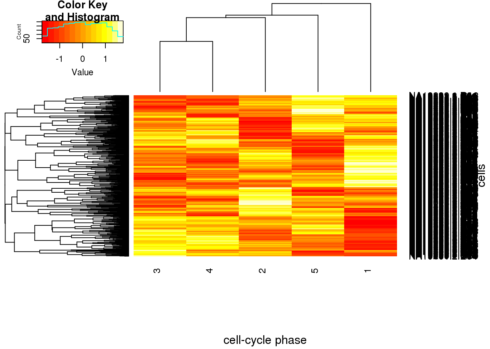
cell_phase <- apply(ans_normed_normed,1,function(x) colnames(cell_cycle_genes)[which.max(x)])
assign_cell_phase <- data.frame(cell_phase)
## plot
phase_order <- c("G1.S","S","G2.M","M","M.G1")
cbPalette <- c("#999999", "#E69F00", "#56B4E9", "#009E73", "#F0E442", "#0072B2", "#D55E00", "#CC79A7")
ggplot(assign_cell_phase, aes(x=cell_phase)) + geom_histogram(aes(fill=factor(cell_phase))) + scale_x_discrete(limits=phase_order, labels=c("G1/S","S","G2/M","M","M/G1")) + scale_fill_manual(values=cbPalette, breaks=phase_order)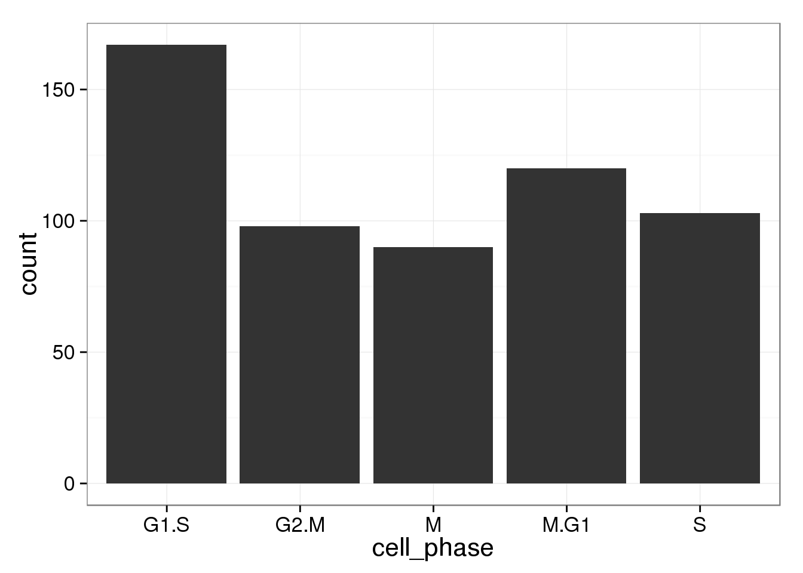
anno_single <- anno %>% filter(well != "bulk")
anno_single$cell_phase <- assign_cell_phase$cell_phase
anno_single$total_reads <- apply(reads_single, 2, sum)
anno_single$total_molecules <- apply(molecules_single, 2, sum)
b <- ggplot(anno_single, aes(x = as.factor(cell_phase), y = total_molecules)) + geom_boxplot(aes(fill=factor(cell_phase))) + scale_x_discrete(limits=phase_order, labels=c("G1/S","S","G2/M","M","M/G1")) + scale_fill_manual(values=cbPalette, breaks=phase_order) + theme(axis.text.x = element_text(angle = 90, hjust = 0.9, vjust = 0.5)) + xlab("Cell cycle phase") + ylab("Total molecules")
b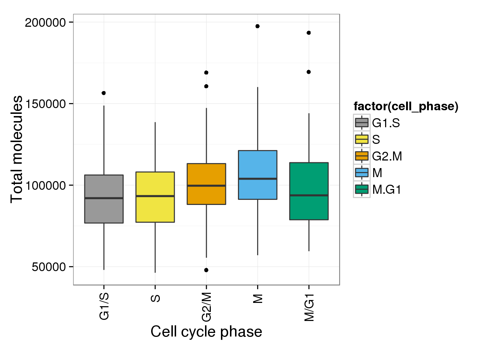
b + facet_grid(individual ~ batch) p <- ggplot(anno_single, aes(x = total_reads, y = total_molecules, col = cell_phase)) + geom_point(size = 3, alpha = 0.5, fontface=3) + scale_colour_manual(values=cbPalette, breaks=phase_order) + theme(axis.text.x = element_text(angle = 90, hjust = 0.9, vjust = 0.5)) + xlab("Total reads") + ylab("Total molecules")
p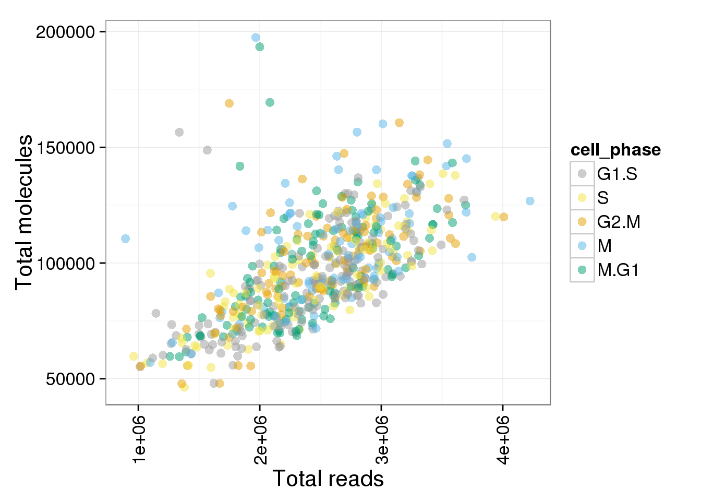
p + facet_grid(individual ~ batch) 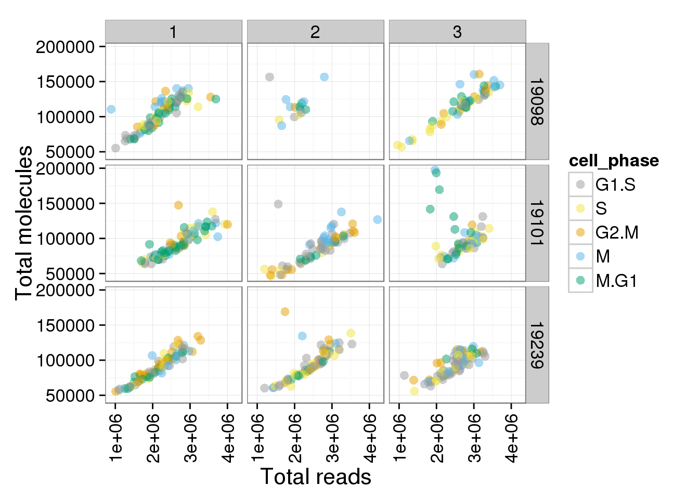
In the original paper that assigned genes to each phase in Whitfield2002 , they use G1/S, S, G2, G2/M, M/G1 instead of G1/S, S, G2/M, M, M/G1 in Macosko2015
ggplot(assign_cell_phase, aes(x=cell_phase)) + geom_histogram(aes(fill=factor(cell_phase))) + scale_x_discrete(limits=phase_order, labels=c("G1/S","S","G2","G2/M","M/G1")) + scale_fill_manual(values=cbPalette, breaks=phase_order, labels=c("G1/S","S","G2","G2/M","M/G1"))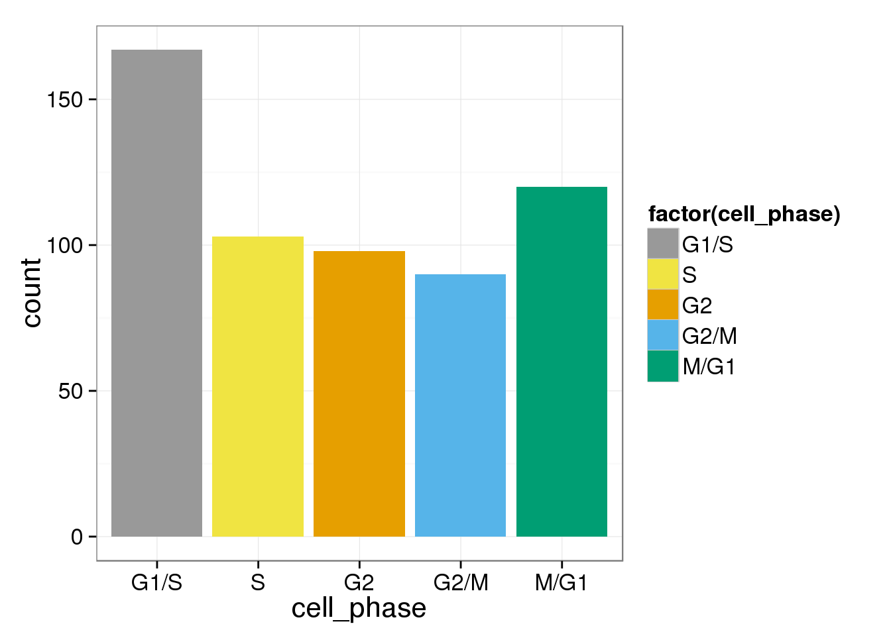
b <- ggplot(anno_single, aes(x = as.factor(cell_phase), y = total_molecules)) + geom_boxplot(aes(fill=factor(cell_phase))) + scale_x_discrete(limits=phase_order, labels=c("G1/S","S","G2","G2/M","M/G1")) + scale_fill_manual(values=cbPalette, breaks=phase_order, labels=c("G1/S","S","G2","G2/M","M/G1")) + theme(axis.text.x = element_text(angle = 90, hjust = 0.9, vjust = 0.5)) + xlab("Cell cycle phase") + ylab("Total molecules")
b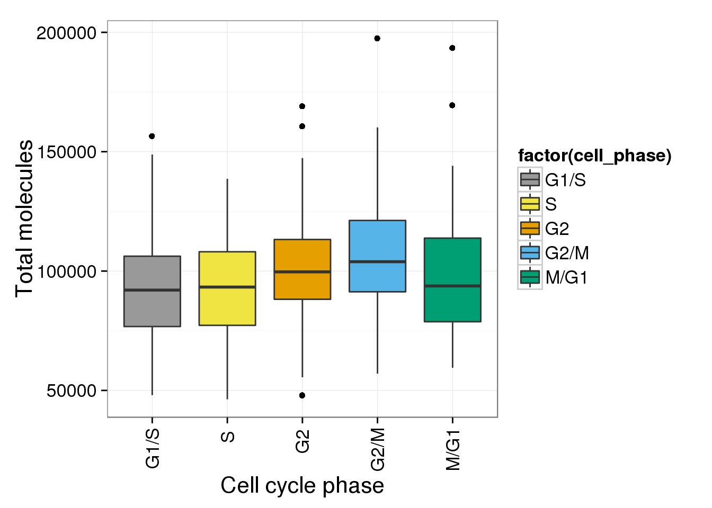
b + facet_grid(individual ~ batch) 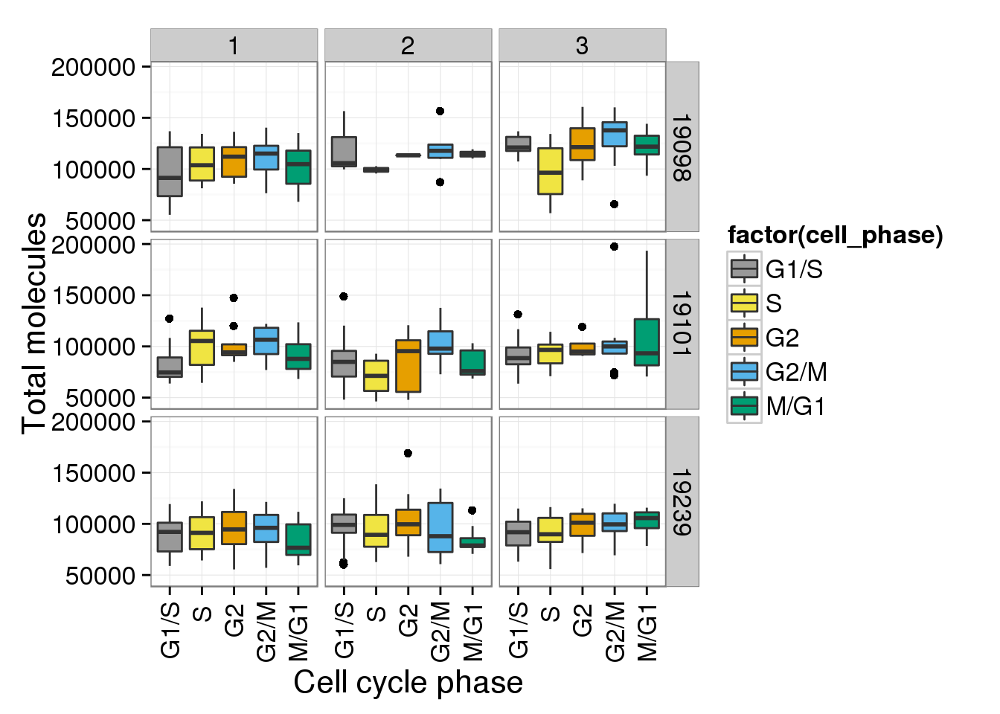
p <- ggplot(anno_single, aes(x = total_reads, y = total_molecules, col = cell_phase)) + geom_point(size = 3, alpha = 0.5, fontface=3) + scale_colour_manual(values=cbPalette, breaks=phase_order, labels=c("G1/S","S","G2","G2/M","M/G1")) + theme(axis.text.x = element_text(angle = 90, hjust = 0.9, vjust = 0.5)) + xlab("Total reads") + ylab("Total molecules")
pp + facet_grid(individual ~ batch) 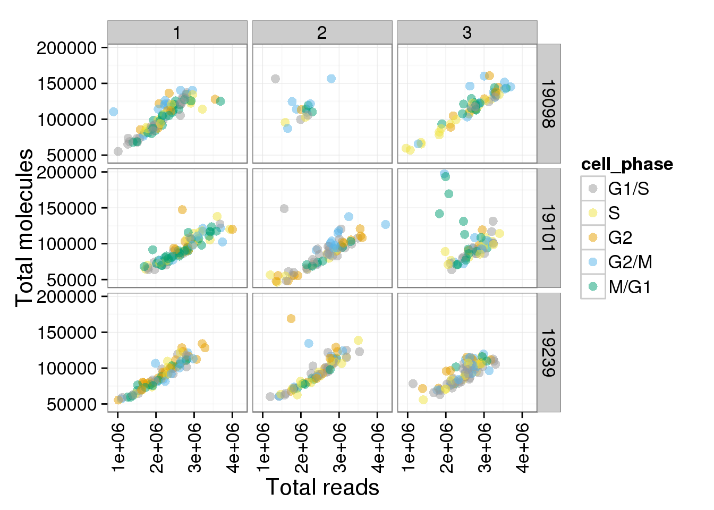
p + facet_grid(individual ~ cell_phase)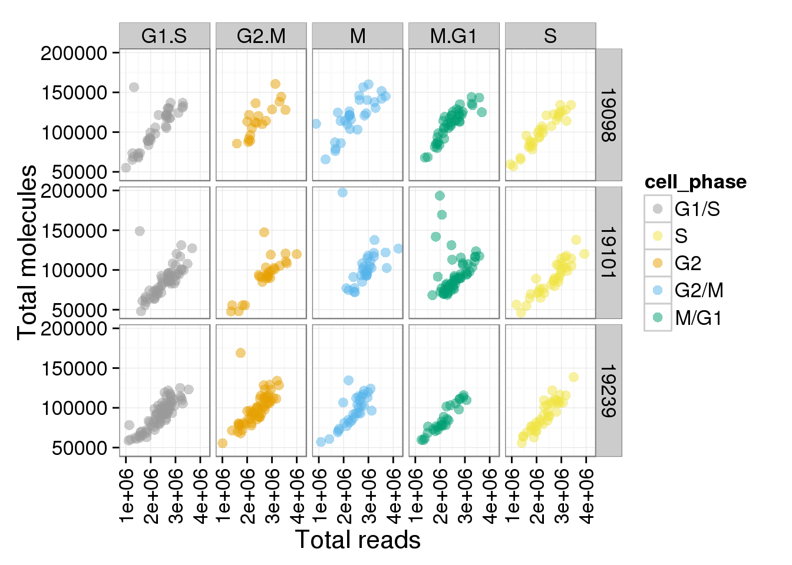
# remove bulk
summary_per_sample_reads_single <- summary_per_sample_reads_qc[summary_per_sample_reads_qc$well!="bulk",]
# create total mapped reads
summary_per_sample_reads_single$total_mapped <- apply(summary_per_sample_reads_single[,5:8],1,sum)
# total ERCC molecules
summary_per_sample_reads_single$total_ERCC_mol <- apply(molecules_single[grep("ERCC", rownames(molecules_single)), ],2,sum)
# creat ERCC molecule ratios
summary_per_sample_reads_single$ERCC_mol_ratios <- apply(molecules_single[grep("ERCC", rownames(molecules_single)), ],2,sum)/apply(molecules_single,2,sum)
# creat endogenous gene molecule
summary_per_sample_reads_single$total_gene_mol <- apply(molecules_single[grep("ENSG", rownames(molecules_single)), ],2,sum)
# creat endogenous gene molecule ratios
summary_per_sample_reads_single$gene_mol_ratios <- apply(molecules_single[grep("ENSG", rownames(molecules_single)), ],2,sum)/apply(molecules_single,2,sum)
# plot
ggplot(summary_per_sample_reads_single, aes(x = total_mapped, y = ERCC_mol_ratios, col = as.factor(individual), shape = as.factor(batch))) + geom_point(size = 3, alpha = 0.5)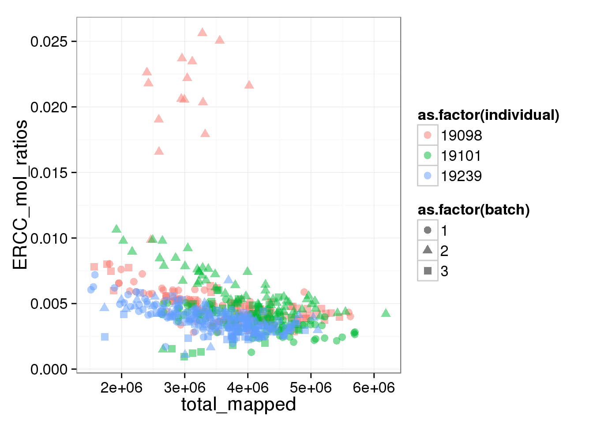
ggplot(summary_per_sample_reads_single, aes(x = total_mapped, y = gene_mol_ratios, col = as.factor(individual), shape = as.factor(batch))) + geom_point(size = 3, alpha = 0.5)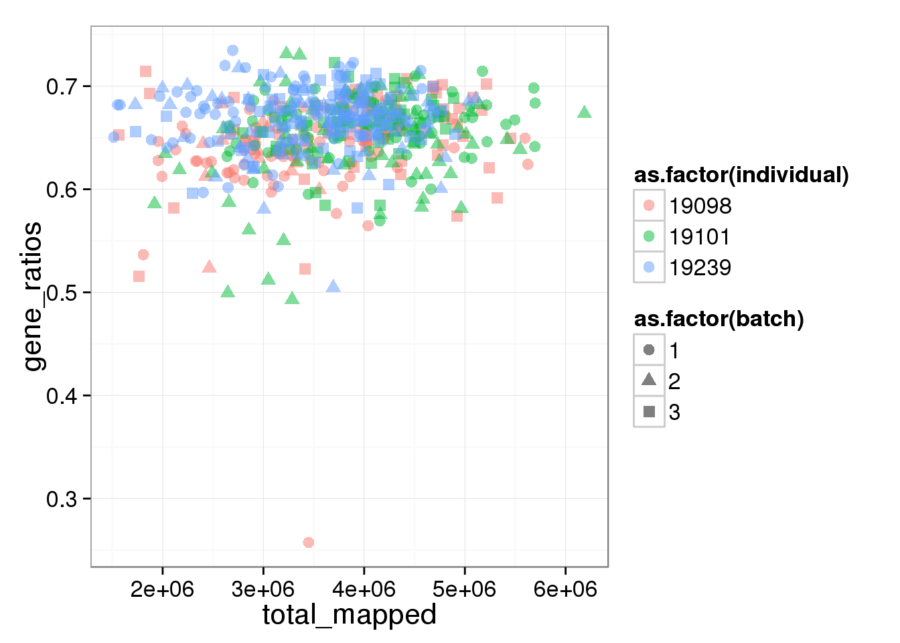
anno_single$gene_mol_ratios <- summary_per_sample_reads_single$gene_mol_ratios
anno_single$ERCC_mol_ratios <- summary_per_sample_reads_single$ERCC_mol_ratios
ggplot(anno_single, aes(x = gene_mol_ratios, y = total_molecules, col = cell_phase)) + geom_point(size = 3, alpha = 0.5, fontface=3) + scale_colour_manual(values=cbPalette, breaks=phase_order, labels=c("G1/S","S","G2","G2/M","M/G1")) + theme(axis.text.x = element_text(angle = 90, hjust = 0.9, vjust = 0.5)) + xlab("total endogenou gene molecule/total molecule") + ylab("Total molecules")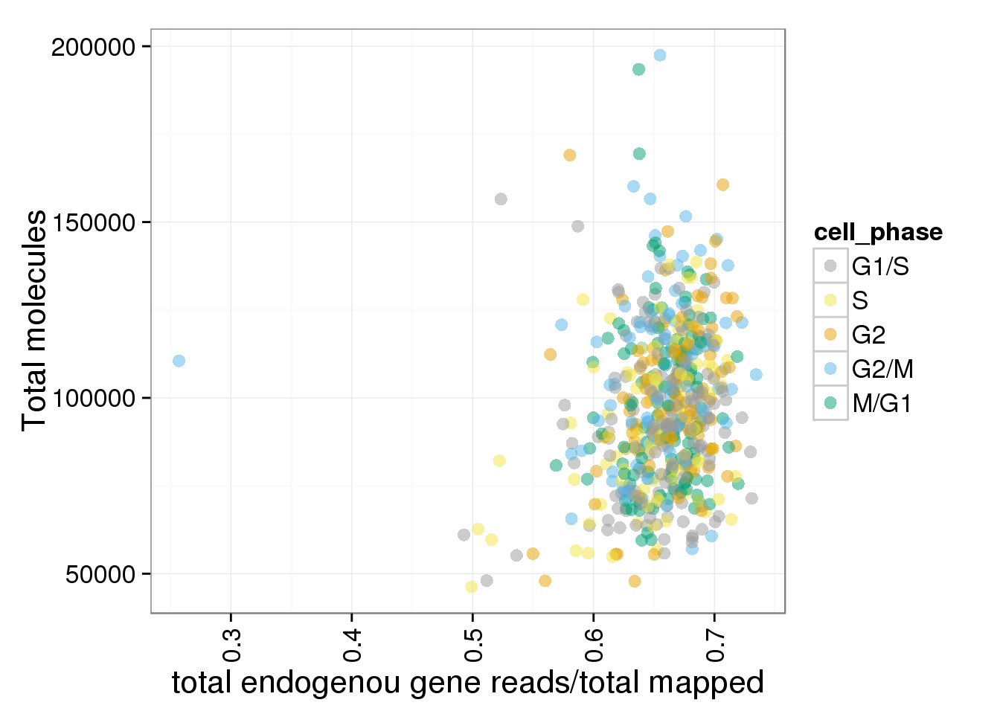
ggplot(anno_single, aes(x = ERCC_mol_ratios, y = total_molecules, col = cell_phase)) + geom_point(size = 3, alpha = 0.5, fontface=3) + scale_colour_manual(values=cbPalette, breaks=phase_order, labels=c("G1/S","S","G2","G2/M","M/G1")) + theme(axis.text.x = element_text(angle = 90, hjust = 0.9, vjust = 0.5)) + xlab("total ERCC molecule/total molecule") + ylab("Total molecules")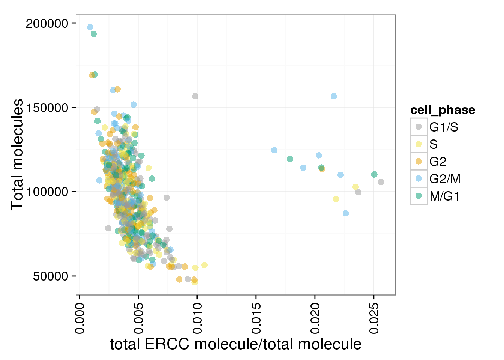
# box plots
r <- ggplot(anno_single, aes(x = as.factor(cell_phase), y = gene_mol_ratios)) + geom_boxplot(aes(fill=factor(cell_phase))) + scale_x_discrete(limits=phase_order, labels=c("G1/S","S","G2","G2/M","M/G1")) + scale_fill_manual(values=cbPalette, breaks=phase_order, labels=c("G1/S","S","G2","G2/M","M/G1")) + theme(axis.text.x = element_text(angle = 90, hjust = 0.9, vjust = 0.5)) + xlab("Cell cycle phase") + ylab("total endogenou gene molecule/total molecules")
r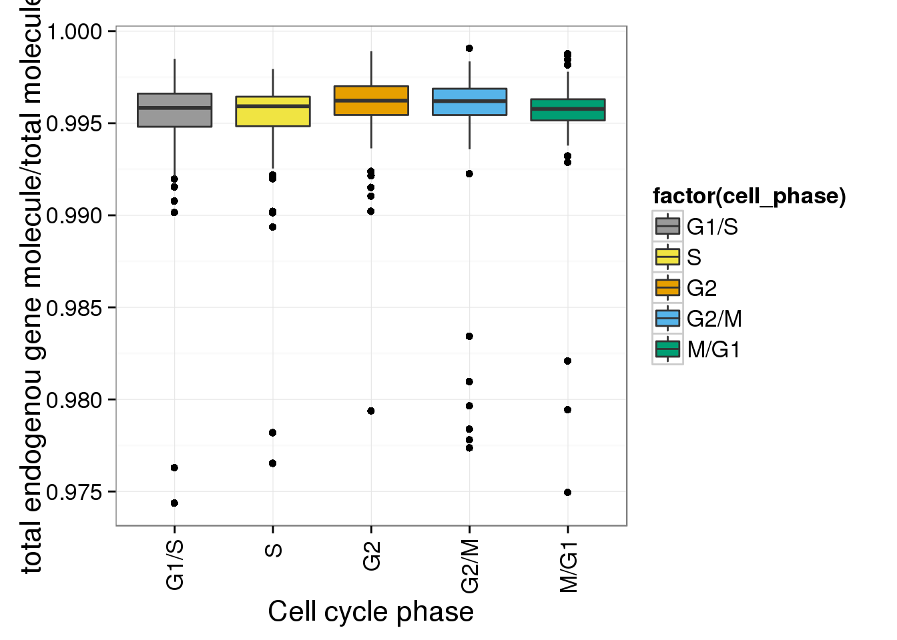
r + facet_grid(individual ~ batch) 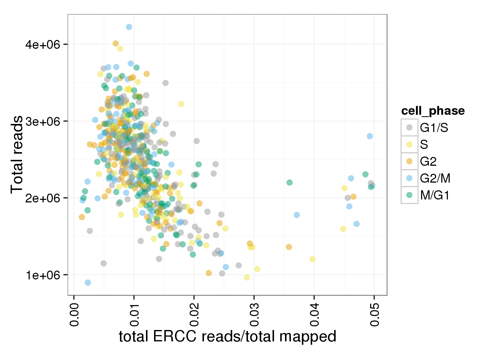
e <- ggplot(anno_single, aes(x = as.factor(cell_phase), y= ERCC_mol_ratios)) + geom_boxplot(aes(fill=factor(cell_phase))) + scale_x_discrete(limits=phase_order, labels=c("G1/S","S","G2","G2/M","M/G1")) + scale_fill_manual(values=cbPalette, breaks=phase_order, labels=c("G1/S","S","G2","G2/M","M/G1")) + theme(axis.text.x = element_text(angle = 90, hjust = 0.9, vjust = 0.5)) + xlab("Cell cycle phase") + ylab("total ERCC molecule/total molecules")
e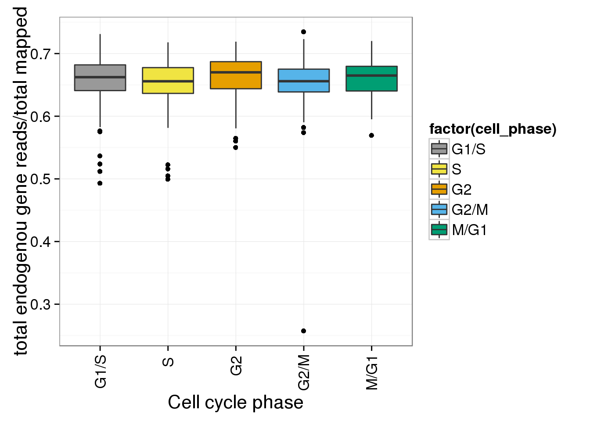
e + facet_grid(individual ~ batch) 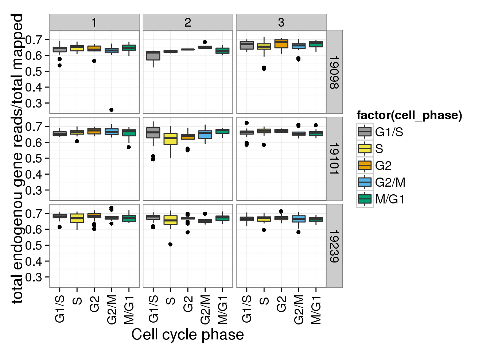
# density plots
d <- ggplot(anno_single, aes(x = gene_mol_ratios, fill = cell_phase)) + geom_density(alpha = 0.5)
d + facet_grid(individual ~ batch)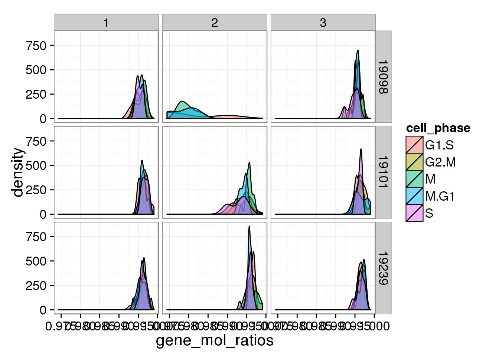
d + facet_grid(cell_phase ~ individual)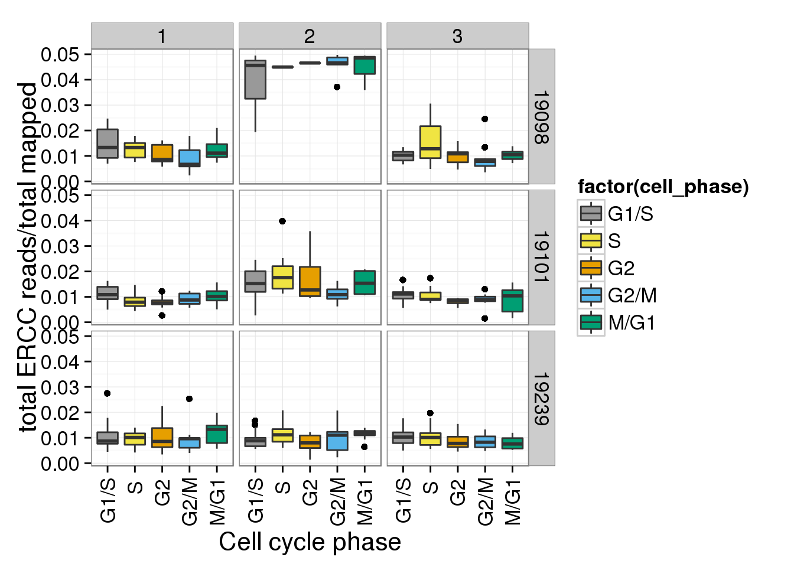
s <- ggplot(anno_single, aes(x = ERCC_mol_ratios, fill = cell_phase)) + geom_density(alpha = 0.5)
s + facet_grid(individual ~ batch)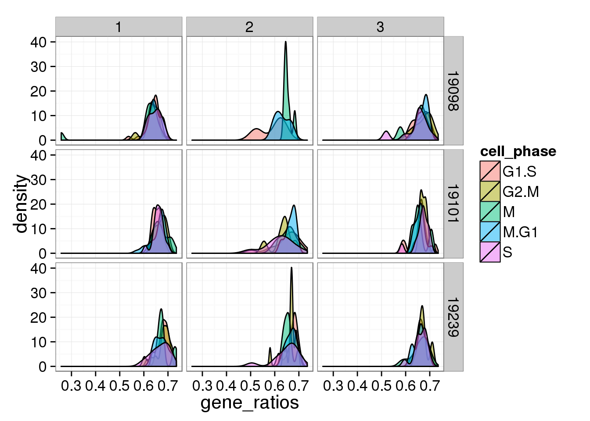
s + facet_grid(cell_phase ~ individual)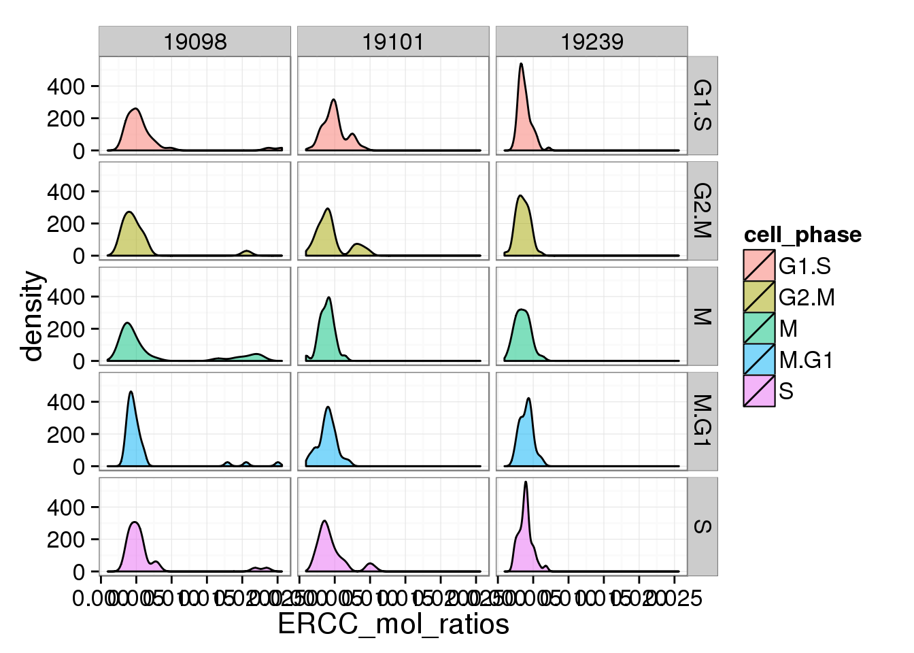
Check if total endogenous gene molecule or total ERCC molecule is reaching the satuation point!
# add total ERCC molecule
anno_single$total_ERCC_molecule <- apply(molecules_single[grep("ERCC", rownames(molecules_single)), ],2,sum)
anno_single$total_gene_molecule <- apply(molecules_single[grep("ENSG", rownames(molecules_single)), ],2,sum)
total_gene <- ggplot(anno_single, aes(x = total_gene_molecule, y = total_reads, col = cell_phase)) + geom_point(size = 3, alpha = 0.5, fontface=3) + scale_colour_manual(values=cbPalette, breaks=phase_order, labels=c("G1/S","S","G2","G2/M","M/G1")) + theme(axis.text.x = element_text(angle = 90, hjust = 0.9, vjust = 0.5)) + xlab("total gene molecules") + ylab("Total reads")
total_gene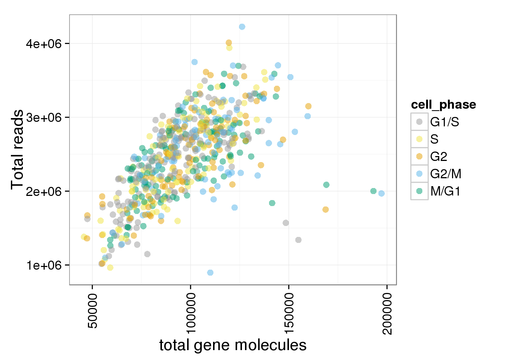
total_gene + facet_grid(individual ~ cell_phase) + geom_smooth()geom_smooth: method="auto" and size of largest group is <1000, so using loess. Use 'method = x' to change the smoothing method.
geom_smooth: method="auto" and size of largest group is <1000, so using loess. Use 'method = x' to change the smoothing method.
geom_smooth: method="auto" and size of largest group is <1000, so using loess. Use 'method = x' to change the smoothing method.
geom_smooth: method="auto" and size of largest group is <1000, so using loess. Use 'method = x' to change the smoothing method.
geom_smooth: method="auto" and size of largest group is <1000, so using loess. Use 'method = x' to change the smoothing method.
geom_smooth: method="auto" and size of largest group is <1000, so using loess. Use 'method = x' to change the smoothing method.
geom_smooth: method="auto" and size of largest group is <1000, so using loess. Use 'method = x' to change the smoothing method.
geom_smooth: method="auto" and size of largest group is <1000, so using loess. Use 'method = x' to change the smoothing method.
geom_smooth: method="auto" and size of largest group is <1000, so using loess. Use 'method = x' to change the smoothing method.
geom_smooth: method="auto" and size of largest group is <1000, so using loess. Use 'method = x' to change the smoothing method.
geom_smooth: method="auto" and size of largest group is <1000, so using loess. Use 'method = x' to change the smoothing method.
geom_smooth: method="auto" and size of largest group is <1000, so using loess. Use 'method = x' to change the smoothing method.
geom_smooth: method="auto" and size of largest group is <1000, so using loess. Use 'method = x' to change the smoothing method.
geom_smooth: method="auto" and size of largest group is <1000, so using loess. Use 'method = x' to change the smoothing method.
geom_smooth: method="auto" and size of largest group is <1000, so using loess. Use 'method = x' to change the smoothing method.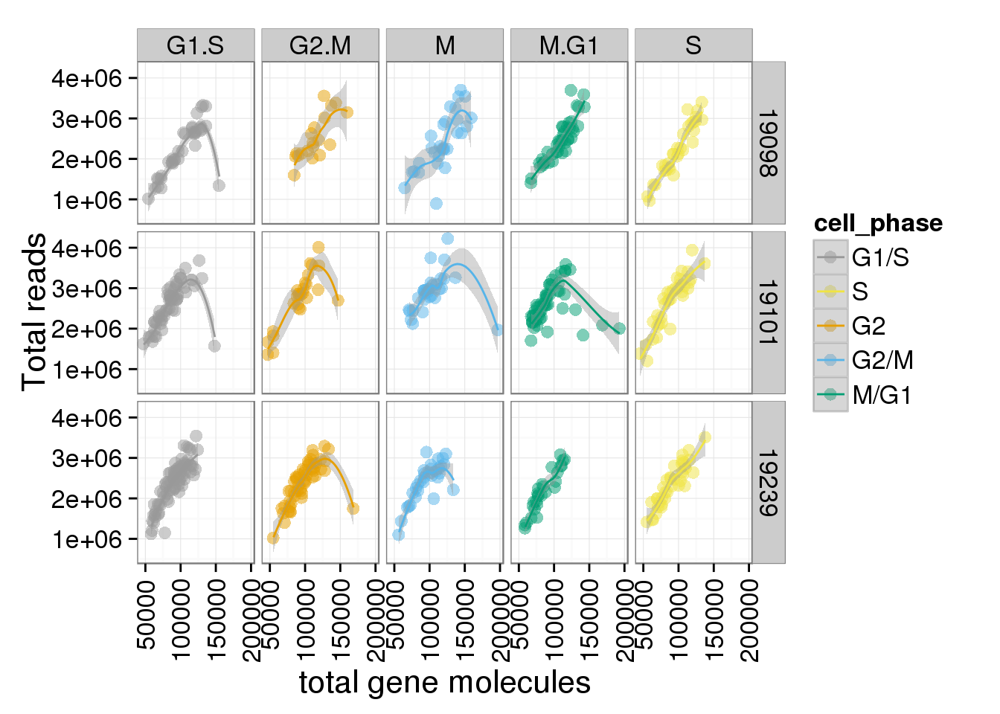
total_ERCC <- ggplot(anno_single, aes(x = total_ERCC_molecule, y = total_reads, col = cell_phase)) + geom_point(size = 3, alpha = 0.5, fontface=3) + scale_colour_manual(values=cbPalette, breaks=phase_order, labels=c("G1/S","S","G2","G2/M","M/G1")) + theme(axis.text.x = element_text(angle = 90, hjust = 0.9, vjust = 0.5)) + xlab("total ERCC molecules") + ylab("Total reads")
total_ERCC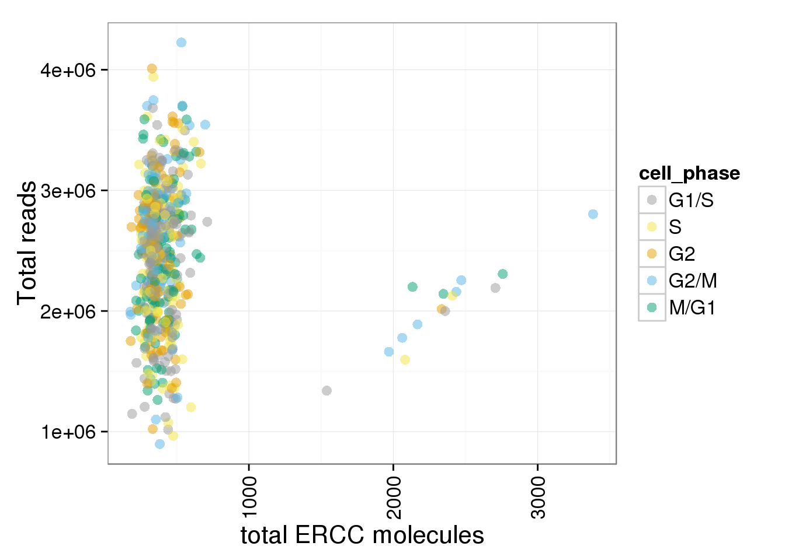
total_ERCC + facet_grid(individual ~ cell_phase) + geom_smooth() + scale_x_continuous(limits=c(0, 1000))geom_smooth: method="auto" and size of largest group is <1000, so using loess. Use 'method = x' to change the smoothing method.Warning: Removed 3 rows containing missing values (stat_smooth).geom_smooth: method="auto" and size of largest group is <1000, so using loess. Use 'method = x' to change the smoothing method.Warning: Removed 1 rows containing missing values (stat_smooth).geom_smooth: method="auto" and size of largest group is <1000, so using loess. Use 'method = x' to change the smoothing method.Warning: Removed 6 rows containing missing values (stat_smooth).geom_smooth: method="auto" and size of largest group is <1000, so using loess. Use 'method = x' to change the smoothing method.Warning: Removed 3 rows containing missing values (stat_smooth).geom_smooth: method="auto" and size of largest group is <1000, so using loess. Use 'method = x' to change the smoothing method.Warning: Removed 2 rows containing missing values (stat_smooth).geom_smooth: method="auto" and size of largest group is <1000, so using loess. Use 'method = x' to change the smoothing method.
geom_smooth: method="auto" and size of largest group is <1000, so using loess. Use 'method = x' to change the smoothing method.
geom_smooth: method="auto" and size of largest group is <1000, so using loess. Use 'method = x' to change the smoothing method.
geom_smooth: method="auto" and size of largest group is <1000, so using loess. Use 'method = x' to change the smoothing method.
geom_smooth: method="auto" and size of largest group is <1000, so using loess. Use 'method = x' to change the smoothing method.
geom_smooth: method="auto" and size of largest group is <1000, so using loess. Use 'method = x' to change the smoothing method.
geom_smooth: method="auto" and size of largest group is <1000, so using loess. Use 'method = x' to change the smoothing method.
geom_smooth: method="auto" and size of largest group is <1000, so using loess. Use 'method = x' to change the smoothing method.
geom_smooth: method="auto" and size of largest group is <1000, so using loess. Use 'method = x' to change the smoothing method.
geom_smooth: method="auto" and size of largest group is <1000, so using loess. Use 'method = x' to change the smoothing method.Warning: Removed 3 rows containing missing values (geom_point).Warning: Removed 1 rows containing missing values (geom_point).Warning: Removed 6 rows containing missing values (geom_point).Warning: Removed 3 rows containing missing values (geom_point).Warning: Removed 2 rows containing missing values (geom_point).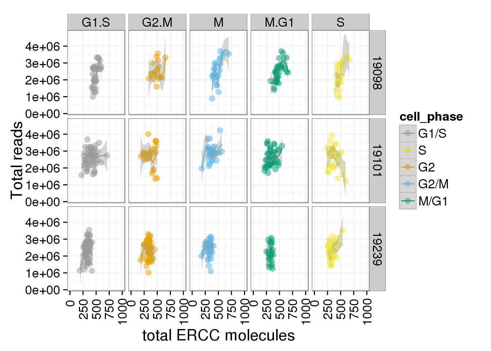
sessionInfo()R version 3.2.0 (2015-04-16)
Platform: x86_64-unknown-linux-gnu (64-bit)
locale:
[1] LC_CTYPE=en_US.UTF-8 LC_NUMERIC=C
[3] LC_TIME=en_US.UTF-8 LC_COLLATE=en_US.UTF-8
[5] LC_MONETARY=en_US.UTF-8 LC_MESSAGES=en_US.UTF-8
[7] LC_PAPER=en_US.UTF-8 LC_NAME=C
[9] LC_ADDRESS=C LC_TELEPHONE=C
[11] LC_MEASUREMENT=en_US.UTF-8 LC_IDENTIFICATION=C
attached base packages:
[1] stats graphics grDevices utils datasets methods base
other attached packages:
[1] gplots_2.17.0 edgeR_3.10.2 limma_3.24.9 ggplot2_1.0.1 dplyr_0.4.2
[6] knitr_1.10.5
loaded via a namespace (and not attached):
[1] Rcpp_0.12.0 magrittr_1.5 MASS_7.3-40
[4] munsell_0.4.2 colorspace_1.2-6 R6_2.1.1
[7] stringr_1.0.0 httr_0.6.1 plyr_1.8.3
[10] caTools_1.17.1 tools_3.2.0 parallel_3.2.0
[13] grid_3.2.0 gtable_0.1.2 KernSmooth_2.23-14
[16] DBI_0.3.1 gtools_3.5.0 htmltools_0.2.6
[19] lazyeval_0.1.10 yaml_2.1.13 assertthat_0.1
[22] digest_0.6.8 reshape2_1.4.1 formatR_1.2
[25] bitops_1.0-6 RCurl_1.95-4.6 evaluate_0.7
[28] rmarkdown_0.6.1 labeling_0.3 gdata_2.16.1
[31] stringi_0.4-1 scales_0.2.4 proto_0.3-10